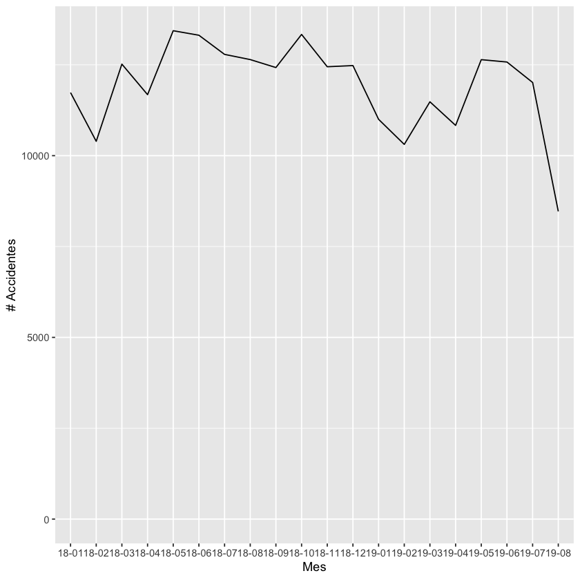
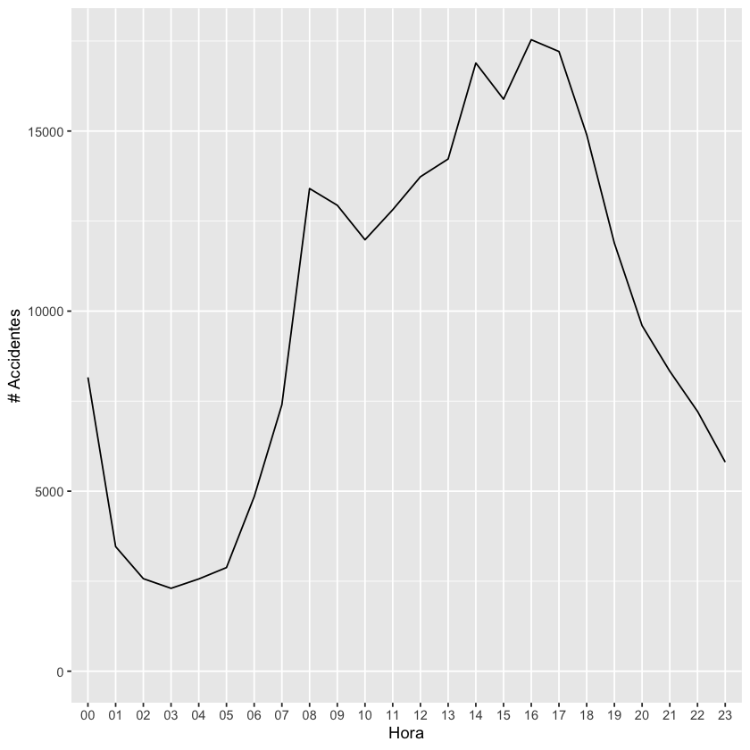
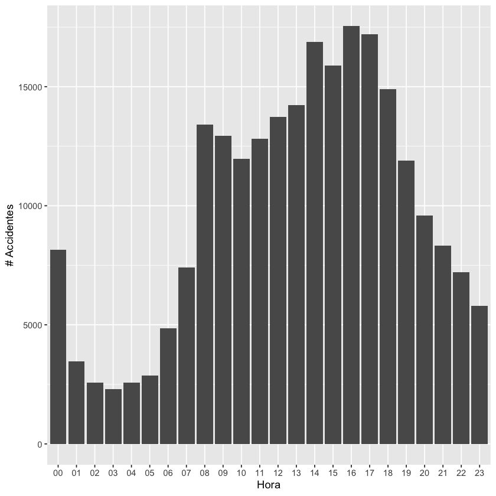
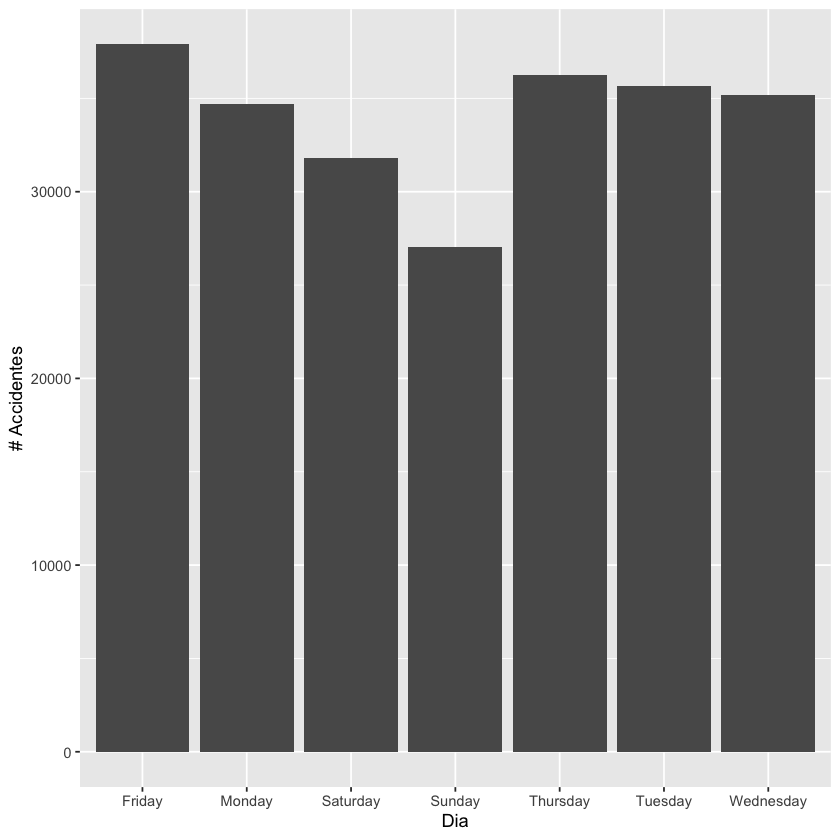
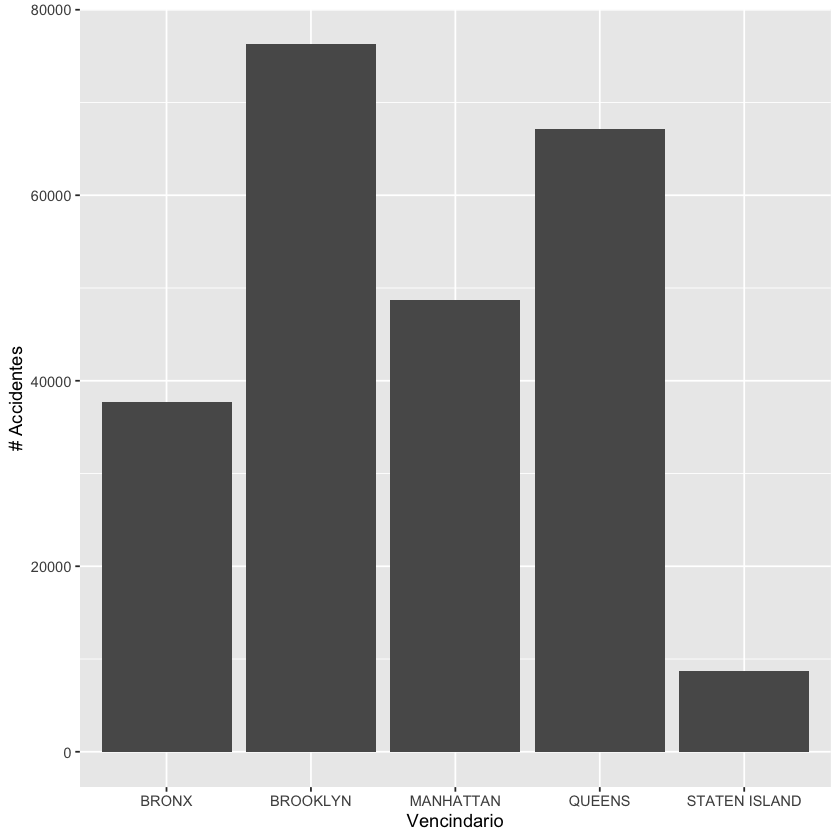
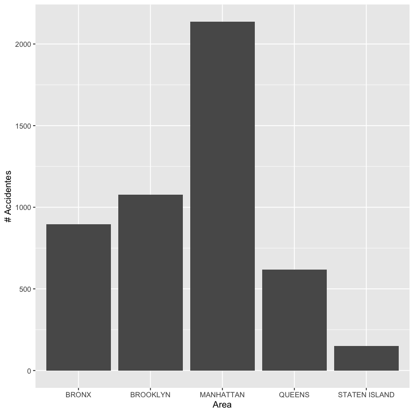
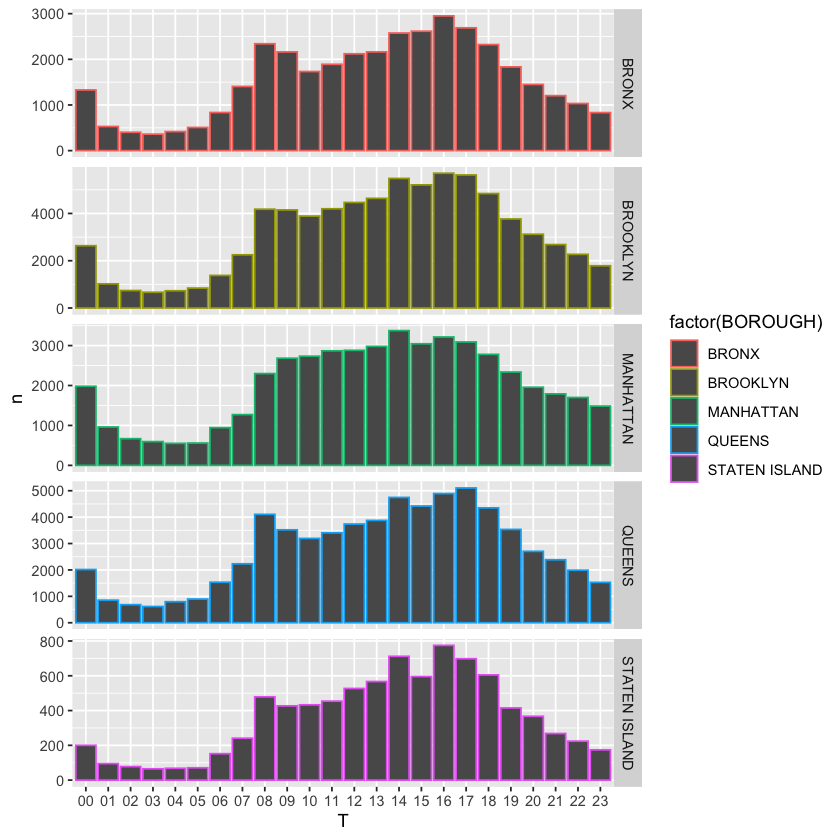

Code
library("ggplot2")
library("dplyr")
library('tidyr')
library('reshape2')
setwd("./")La ciudad de New York es una de las mas habitadas del mundo con mas de 8M de habitantes hacias el 2022, como se menciona en DataUsa.io, la diversidad de su poblacion varia con un 85% de ellos serian ciudadaos nacionales y en su mayoria de ellos de identidada blanca, vale la pena mencionar que un 29% de ellos son hispano parlantes y ademas de ello mas conocida como la ciudad que nunca duerme.
En terminos economicos, mas de 4.11M de personas hacen parte de la fuerza laboral para el 2022. Llama la atencion este indicador porque ano tras ano esta en decadencia con un ritmo del declive del -1.34%.
los accidentes de trafico representan un problema de gran importancia en diferentes niveles, con repercusiones tanto economicas como sociales segun Lucas et al. (2024) . En espana por ejemplo represetan la mayor causa de mortalidad externa.
La pregunta que se plantea: se pueden establecer tendencias de crecimientos de los accidentes de transito en la ciudad de New York, que conlleve a definir politicas publicas y con ellos evitar que ciertos indicadores economicos no sean afectados?
El conjunnto de datos a analisar se llama a accidentes, cuenta con mas \(238.522\) observaciones y tiene columnas tanto cualitativas como cuantitativas.
library("ggplot2")
library("dplyr")
library('tidyr')
library('reshape2')
setwd("./")d <- read.csv2("./datasets/accidents.csv", sep = ";", header = TRUE)d| DATE | TIME | BOROUGH | ZIP.CODE | LATITUDE | LONGITUDE | ON.STREET.NAME | NUMBER.OF.PEDESTRIANS.INJURED | NUMBER.OF.PEDESTRIANS.KILLED | NUMBER.OF.CYCLIST.INJURED | ⋯ | CONTRIBUTING.FACTOR.VEHICLE.2 | CONTRIBUTING.FACTOR.VEHICLE.3 | CONTRIBUTING.FACTOR.VEHICLE.4 | CONTRIBUTING.FACTOR.VEHICLE.5 | COLLISION_ID | VEHICLE.TYPE.CODE.1 | VEHICLE.TYPE.CODE.2 | VEHICLE.TYPE.CODE.3 | VEHICLE.TYPE.CODE.4 | VEHICLE.TYPE.CODE.5 |
|---|---|---|---|---|---|---|---|---|---|---|---|---|---|---|---|---|---|---|---|---|
| <chr> | <chr> | <chr> | <chr> | <chr> | <chr> | <chr> | <int> | <int> | <int> | ⋯ | <chr> | <chr> | <chr> | <chr> | <int> | <chr> | <chr> | <chr> | <chr> | <chr> |
| 09/26/2018 | 12:12 | BRONX | 10454.0 | 40.808987 | -73.911316 | 0 | 0 | 0 | ⋯ | 3988123 | Sedan | |||||||||
| 09/25/2018 | 16:30 | BROOKLYN | 11236.0 | 40.636005 | -73.91251 | FLATLANDS AVENUE | 1 | 0 | 0 | ⋯ | 3987962 | Sedan | ||||||||
| 08/22/2019 | 19:30 | QUEENS | 11101.0 | 40.75549 | -73.93953 | 0 | 0 | 0 | ⋯ | 4193132 | Sedan | |||||||||
| 09/23/2018 | 13:10 | QUEENS | 11367.0 | MAIN STREET | 0 | 0 | 1 | ⋯ | Unspecified | 3985962 | Bike | Station Wagon/Sport Utility Vehicle | ||||||||
| 08/20/2019 | 22:40 | BRONX | 10468.0 | 40.868336 | -73.90127 | 0 | 0 | 0 | ⋯ | Unspecified | 4192111 | Sedan | Sedan | |||||||
| 08/20/2019 | 7:15 | QUEENS | 11354.0 | 0 | 0 | 0 | ⋯ | 4191802 | Sedan | |||||||||||
| 08/19/2019 | 12:00 | QUEENS | 11422.0 | 40.669327 | -73.73533 | 241 STREET | 0 | 0 | 0 | ⋯ | Unspecified | 4191196 | Sedan | Sedan | ||||||
| 09/22/2018 | 11:25 | BRONX | 10465.0 | 40.836227 | -73.82292 | 0 | 0 | 0 | ⋯ | 4004118 | Sedan | |||||||||
| 09/22/2018 | 15:56 | BRONX | 10451.0 | 40.819297999999996 | -73.92188 | 0 | 0 | 0 | ⋯ | 3985745 | Sedan | |||||||||
| 08/18/2019 | 12:43 | BRONX | 10451.0 | EAST 149 STREET | 0 | 0 | 0 | ⋯ | Passing Too Closely | 4191092 | Sedan | Sedan | ||||||||
| 08/18/2019 | 16:45 | QUEENS | 11375.0 | 40.728953999999995 | -73.847565 | 67 AVENUE | 0 | 0 | 0 | ⋯ | Unspecified | 4190455 | Station Wagon/Sport Utility Vehicle | |||||||
| 08/17/2019 | 13:11 | BRONX | 10466.0 | SCHIEFELIN AVENUE | 0 | 0 | 0 | ⋯ | Unspecified | 4190717 | Sedan | Sedan | ||||||||
| 08/16/2019 | 10:30 | BROOKLYN | 11211.0 | 40.711548 | -73.95353 | 0 | 0 | 0 | ⋯ | Unspecified | 4190764 | Sedan | ||||||||
| 09/20/2018 | 17:30 | BROOKLYN | 11201.0 | Dekalb ave | 0 | 0 | 0 | ⋯ | Unspecified | 3984687 | Sedan | Station Wagon/Sport Utility Vehicle | ||||||||
| 09/20/2018 | 1:40 | BRONX | 10459.0 | 40.825947 | -73.88784 | LONGFELLOW AVENUE | 0 | 0 | 0 | ⋯ | 3984408 | Station Wagon/Sport Utility Vehicle | ||||||||
| 09/19/2018 | 15:00 | QUEENS | 11375.0 | 40.722621999999994 | -73.849144 | YELLOWSTONE BOULEVARD | 0 | 0 | 0 | ⋯ | Following Too Closely | 3984060 | Sedan | Sedan | ||||||
| 09/19/2018 | 8:30 | MANHATTAN | 10036.0 | 0 | 0 | 0 | ⋯ | Unspecified | 3984325 | Bus | Sedan | |||||||||
| 09/18/2018 | 10:37 | BROOKLYN | 11226.0 | 40.639927 | -73.94939000000001 | NEWKIRK AVENUE | 0 | 0 | 0 | ⋯ | Unspecified | 3983284 | Sedan | Sedan | ||||||
| 09/18/2018 | 15:30 | BROOKLYN | 11209.0 | 40.62149 | -74.02622 | 86 STREET | 0 | 0 | 0 | ⋯ | 3983654 | Sedan | ||||||||
| 08/12/2019 | 8:30 | BRONX | 10468.0 | 40.86593 | -73.90286 | 0 | 0 | 0 | ⋯ | 4187375 | Sedan | |||||||||
| 08/11/2019 | 0:07 | MANHATTAN | 10010.0 | 40.73855 | -73.98043 | EAST 24 STREET | 0 | 0 | 0 | ⋯ | Oversized Vehicle | 4186702 | Sedan | Van | ||||||
| 09/16/2018 | 5:30 | BROOKLYN | 11217.0 | FLATBUSH AVENUE | 0 | 0 | 0 | ⋯ | Unspecified | 3981311 | Sedan | Sedan | ||||||||
| 09/15/2018 | 16:16 | BROOKLYN | 11223.0 | 40.59217 | -73.968636 | 0 | 0 | 0 | ⋯ | 3981971 | Sedan | |||||||||
| 09/15/2018 | 19:15 | BRONX | 10461.0 | 40.843727 | -73.82754 | JARVIS AVENUE | 0 | 0 | 0 | ⋯ | 3981526 | ELECT | ||||||||
| 08/10/2019 | 22:00 | BRONX | 10458.0 | EAST FORDHAM ROAD | 0 | 0 | 0 | ⋯ | 4186687 | Station Wagon/Sport Utility Vehicle | ||||||||||
| 08/10/2019 | 23:28 | QUEENS | 11372.0 | 40.753082 | -73.88399 | 0 | 0 | 0 | ⋯ | 4186524 | Sedan | |||||||||
| 08/10/2019 | 3:00 | BROOKLYN | 11219.0 | 40.630577 | -74.00751 | 64 STREET | 0 | 0 | 0 | ⋯ | Unspecified | 4186063 | Taxi | Sedan | ||||||
| 08/09/2019 | 0:45 | BRONX | 10457.0 | 40.851032000000004 | -73.90173 | 1 | 0 | 0 | ⋯ | 4185779 | ||||||||||
| 08/09/2019 | 10:50 | MANHATTAN | 10027.0 | 40.80559 | -73.94828000000001 | 0 | 0 | 0 | ⋯ | Unspecified | 4185798 | Station Wagon/Sport Utility Vehicle | ||||||||
| 09/14/2018 | 15:16 | BROOKLYN | 11234.0 | 40.618652000000004 | -73.9317 | AVENUE N | 0 | 0 | 0 | ⋯ | Unspecified | 3982523 | Sedan | Sedan | ||||||
| ⋮ | ⋮ | ⋮ | ⋮ | ⋮ | ⋮ | ⋮ | ⋮ | ⋮ | ⋮ | ⋱ | ⋮ | ⋮ | ⋮ | ⋮ | ⋮ | ⋮ | ⋮ | ⋮ | ⋮ | ⋮ |
| 01/15/2018 | 16:00 | QUEENS | 11354.0 | 40.77064 | -73.82658 | 31 ROAD | 0 | 0 | 0 | ⋯ | Unspecified | 3829364 | SPORT UTILITY / STATION WAGON | SPORT UTILITY / STATION WAGON | ||||||
| 01/27/2018 | 15:15 | BROOKLYN | 11210.0 | 40.636086 | -73.95091 | FARRAGUT ROAD | 0 | 0 | 0 | ⋯ | Unspecified | 3836656 | PASSENGER VEHICLE | PASSENGER VEHICLE | ||||||
| 01/05/2018 | 19:20 | QUEENS | 11413.0 | 40.676693 | -73.74221 | MERRICK BOULEVARD | 0 | 0 | 0 | ⋯ | Traffic Control Disregarded | 3822961 | SPORT UTILITY / STATION WAGON | SPORT UTILITY / STATION WAGON | ||||||
| 02/01/2018 | 14:45 | QUEENS | 11432.0 | 40.71175 | -73.80079 | 164 STREET | 1 | 0 | 0 | ⋯ | 3839717 | PASSENGER VEHICLE | ||||||||
| 01/12/2018 | 12:26 | BROOKLYN | 11208.0 | 40.667126 | -73.86704 | 0 | 0 | 0 | ⋯ | 3859143 | SPORT UTILITY / STATION WAGON | |||||||||
| 01/01/2018 | 20:45 | QUEENS | 11691.0 | 40.59853 | -73.74620999999999 | 0 | 0 | 0 | ⋯ | Unspecified | 3821007 | SPORT UTILITY / STATION WAGON | PASSENGER VEHICLE | |||||||
| 01/26/2018 | 8:30 | QUEENS | 11368.0 | 40.750609999999995 | -73.85873000000001 | 0 | 0 | 1 | ⋯ | Unspecified | 3835244 | SPORT UTILITY / STATION WAGON | BICYCLE | |||||||
| 01/10/2018 | 10:30 | BROOKLYN | 11201.0 | 40.68969 | -73.99237 | COURT STREET | 1 | 0 | 0 | ⋯ | 3828292 | PICK-UP TRUCK | ||||||||
| 01/02/2018 | 8:30 | QUEENS | 11422.0 | 40.68227 | -73.73236999999999 | 0 | 0 | 0 | ⋯ | Unspecified | Unspecified | Unspecified | 3821315 | SPORT UTILITY / STATION WAGON | SPORT UTILITY / STATION WAGON | PASSENGER VEHICLE | PASSENGER VEHICLE | |||
| 01/09/2018 | 12:15 | MANHATTAN | 10029.0 | 40.790366999999996 | -73.949776 | EAST 102 STREET | 0 | 0 | 0 | ⋯ | Unspecified | 3826998 | PASSENGER VEHICLE | |||||||
| 01/26/2018 | 18:00 | STATEN ISLAND | 10306.0 | 40.564537 | -74.13171 | AMBOY ROAD | 0 | 0 | 0 | ⋯ | Traffic Control Disregarded | 3835233 | PASSENGER VEHICLE | PASSENGER VEHICLE | ||||||
| 01/10/2018 | 14:30 | QUEENS | 11434.0 | 40.659397 | -73.773384 | 0 | 0 | 0 | ⋯ | Unspecified | 3826287 | TK | SPORT UTILITY / STATION WAGON | |||||||
| 01/16/2018 | 19:45 | QUEENS | 11106.0 | 40.76197 | -73.92539000000001 | BROADWAY | 0 | 0 | 0 | ⋯ | Unspecified | 3830068 | PASSENGER VEHICLE | TAXI | ||||||
| 01/21/2018 | 0:58 | BRONX | 10467.0 | 40.861256 | -73.86272 | WARING AVENUE | 0 | 0 | 0 | ⋯ | Unspecified | 3832720 | SPORT UTILITY / STATION WAGON | PASSENGER VEHICLE | ||||||
| 01/06/2018 | 6:30 | QUEENS | 11370.0 | 40.755835999999995 | -73.89299 | 0 | 0 | 0 | ⋯ | Unspecified | 3823388 | PASSENGER VEHICLE | SPORT UTILITY / STATION WAGON | |||||||
| 01/29/2018 | 14:30 | QUEENS | 11385.0 | 40.71158 | -73.90131 | 0 | 0 | 0 | ⋯ | Unspecified | 3836896 | SPORT UTILITY / STATION WAGON | PICK-UP TRUCK | |||||||
| 01/26/2018 | 11:20 | MANHATTAN | 10019.0 | 40.762062 | -73.98363499999999 | WEST 51 STREET | 0 | 0 | 0 | ⋯ | Unspecified | 3837829 | PASSENGER VEHICLE | TAXI | ||||||
| 01/11/2018 | 18:40 | BROOKLYN | 11225.0 | 40.659405 | -73.96263 | 0 | 0 | 0 | ⋯ | Unspecified | 3826386 | SPORT UTILITY / STATION WAGON | SPORT UTILITY / STATION WAGON | |||||||
| 02/01/2018 | 17:50 | BROOKLYN | 11207.0 | 40.685513 | -73.90841999999999 | 0 | 0 | 0 | ⋯ | Passing Too Closely | 3838554 | PASSENGER VEHICLE | BU | |||||||
| 01/12/2018 | 8:00 | BRONX | 10460.0 | 40.84183 | -73.88389000000001 | EAST TREMONT AVENUE | 0 | 0 | 0 | ⋯ | Unspecified | 3828938 | SPORT UTILITY / STATION WAGON | TAXI | ||||||
| 01/17/2018 | 23:20 | BRONX | 10467.0 | 40.871376 | -73.86334000000001 | BURKE AVENUE | 0 | 0 | 0 | ⋯ | Unspecified | 3831778 | SPORT UTILITY / STATION WAGON | PASSENGER VEHICLE | ||||||
| 01/27/2018 | 18:30 | BROOKLYN | 11214.0 | 40.6073 | -74.00108 | 0 | 0 | 0 | ⋯ | Unspecified | 3835759 | SPORT UTILITY / STATION WAGON | PASSENGER VEHICLE | |||||||
| 01/25/2018 | 13:00 | BRONX | 10470.0 | 40.906384 | -73.85167 | EAST 242 STREET | 0 | 0 | 0 | ⋯ | 3836368 | PASSENGER VEHICLE | ||||||||
| 01/11/2018 | 19:30 | QUEENS | 11375.0 | 40.721363000000004 | -73.84808000000001 | AUSTIN STREET | 1 | 0 | 0 | ⋯ | 3826674 | Station Wagon/Sport Utility Vehicle | ||||||||
| 01/03/2018 | 17:40 | BROOKLYN | 11208.0 | 40.67086 | -73.87424 | FOUNTAIN AVENUE | 0 | 0 | 0 | ⋯ | Unspecified | 3821922 | PASSENGER VEHICLE | PASSENGER VEHICLE | ||||||
| 01/20/2018 | 15:00 | QUEENS | 11436.0 | 40.685356 | -73.79723 | LINDEN BOULEVARD | 0 | 0 | 0 | ⋯ | Unspecified | 3832275 | SPORT UTILITY / STATION WAGON | PASSENGER VEHICLE | ||||||
| 01/04/2018 | 14:00 | BRONX | 10452.0 | 40.84518 | -73.91417 | JEROME AVENUE | 0 | 0 | 0 | ⋯ | 3822315 | SPORT UTILITY / STATION WAGON | ||||||||
| 01/20/2018 | 13:05 | BRONX | 10462.0 | 40.83121 | -73.850876 | CASTLE HILL AVENUE | 0 | 0 | 0 | ⋯ | Unspecified | 3832513 | PASSENGER VEHICLE | SPORT UTILITY / STATION WAGON | ||||||
| 01/29/2018 | 17:45 | QUEENS | 11377.0 | 40.75725 | -73.904854 | 31 AVENUE | 0 | 0 | 0 | ⋯ | Unspecified | 3837608 | SPORT UTILITY / STATION WAGON | PASSENGER VEHICLE | ||||||
| 01/23/2018 | 16:38 | BROOKLYN | 11211.0 | 40.710196999999994 | -73.95843 | HAVEMEYER STREET | 0 | 0 | 0 | ⋯ | Passing or Lane Usage Improper | 3833631 | SPORT UTILITY / STATION WAGON | SPORT UTILITY / STATION WAGON |
Para la organizacion de los datos, fue necesario convertir algunas columnas a tipo Fecha, para poder crear representaciones en donde se pueda analizar el comportamientom de incidentes en el tiempo.
d$DATE <- as.Date.character(d$DATE, "%m/%d/%Y")d| DATE | TIME | BOROUGH | ZIP.CODE | LATITUDE | LONGITUDE | ON.STREET.NAME | NUMBER.OF.PEDESTRIANS.INJURED | NUMBER.OF.PEDESTRIANS.KILLED | NUMBER.OF.CYCLIST.INJURED | ⋯ | CONTRIBUTING.FACTOR.VEHICLE.2 | CONTRIBUTING.FACTOR.VEHICLE.3 | CONTRIBUTING.FACTOR.VEHICLE.4 | CONTRIBUTING.FACTOR.VEHICLE.5 | COLLISION_ID | VEHICLE.TYPE.CODE.1 | VEHICLE.TYPE.CODE.2 | VEHICLE.TYPE.CODE.3 | VEHICLE.TYPE.CODE.4 | VEHICLE.TYPE.CODE.5 |
|---|---|---|---|---|---|---|---|---|---|---|---|---|---|---|---|---|---|---|---|---|
| <date> | <chr> | <chr> | <chr> | <chr> | <chr> | <chr> | <int> | <int> | <int> | ⋯ | <chr> | <chr> | <chr> | <chr> | <int> | <chr> | <chr> | <chr> | <chr> | <chr> |
| 2018-09-26 | 12:12 | BRONX | 10454.0 | 40.808987 | -73.911316 | 0 | 0 | 0 | ⋯ | 3988123 | Sedan | |||||||||
| 2018-09-25 | 16:30 | BROOKLYN | 11236.0 | 40.636005 | -73.91251 | FLATLANDS AVENUE | 1 | 0 | 0 | ⋯ | 3987962 | Sedan | ||||||||
| 2019-08-22 | 19:30 | QUEENS | 11101.0 | 40.75549 | -73.93953 | 0 | 0 | 0 | ⋯ | 4193132 | Sedan | |||||||||
| 2018-09-23 | 13:10 | QUEENS | 11367.0 | MAIN STREET | 0 | 0 | 1 | ⋯ | Unspecified | 3985962 | Bike | Station Wagon/Sport Utility Vehicle | ||||||||
| 2019-08-20 | 22:40 | BRONX | 10468.0 | 40.868336 | -73.90127 | 0 | 0 | 0 | ⋯ | Unspecified | 4192111 | Sedan | Sedan | |||||||
| 2019-08-20 | 7:15 | QUEENS | 11354.0 | 0 | 0 | 0 | ⋯ | 4191802 | Sedan | |||||||||||
| 2019-08-19 | 12:00 | QUEENS | 11422.0 | 40.669327 | -73.73533 | 241 STREET | 0 | 0 | 0 | ⋯ | Unspecified | 4191196 | Sedan | Sedan | ||||||
| 2018-09-22 | 11:25 | BRONX | 10465.0 | 40.836227 | -73.82292 | 0 | 0 | 0 | ⋯ | 4004118 | Sedan | |||||||||
| 2018-09-22 | 15:56 | BRONX | 10451.0 | 40.819297999999996 | -73.92188 | 0 | 0 | 0 | ⋯ | 3985745 | Sedan | |||||||||
| 2019-08-18 | 12:43 | BRONX | 10451.0 | EAST 149 STREET | 0 | 0 | 0 | ⋯ | Passing Too Closely | 4191092 | Sedan | Sedan | ||||||||
| 2019-08-18 | 16:45 | QUEENS | 11375.0 | 40.728953999999995 | -73.847565 | 67 AVENUE | 0 | 0 | 0 | ⋯ | Unspecified | 4190455 | Station Wagon/Sport Utility Vehicle | |||||||
| 2019-08-17 | 13:11 | BRONX | 10466.0 | SCHIEFELIN AVENUE | 0 | 0 | 0 | ⋯ | Unspecified | 4190717 | Sedan | Sedan | ||||||||
| 2019-08-16 | 10:30 | BROOKLYN | 11211.0 | 40.711548 | -73.95353 | 0 | 0 | 0 | ⋯ | Unspecified | 4190764 | Sedan | ||||||||
| 2018-09-20 | 17:30 | BROOKLYN | 11201.0 | Dekalb ave | 0 | 0 | 0 | ⋯ | Unspecified | 3984687 | Sedan | Station Wagon/Sport Utility Vehicle | ||||||||
| 2018-09-20 | 1:40 | BRONX | 10459.0 | 40.825947 | -73.88784 | LONGFELLOW AVENUE | 0 | 0 | 0 | ⋯ | 3984408 | Station Wagon/Sport Utility Vehicle | ||||||||
| 2018-09-19 | 15:00 | QUEENS | 11375.0 | 40.722621999999994 | -73.849144 | YELLOWSTONE BOULEVARD | 0 | 0 | 0 | ⋯ | Following Too Closely | 3984060 | Sedan | Sedan | ||||||
| 2018-09-19 | 8:30 | MANHATTAN | 10036.0 | 0 | 0 | 0 | ⋯ | Unspecified | 3984325 | Bus | Sedan | |||||||||
| 2018-09-18 | 10:37 | BROOKLYN | 11226.0 | 40.639927 | -73.94939000000001 | NEWKIRK AVENUE | 0 | 0 | 0 | ⋯ | Unspecified | 3983284 | Sedan | Sedan | ||||||
| 2018-09-18 | 15:30 | BROOKLYN | 11209.0 | 40.62149 | -74.02622 | 86 STREET | 0 | 0 | 0 | ⋯ | 3983654 | Sedan | ||||||||
| 2019-08-12 | 8:30 | BRONX | 10468.0 | 40.86593 | -73.90286 | 0 | 0 | 0 | ⋯ | 4187375 | Sedan | |||||||||
| 2019-08-11 | 0:07 | MANHATTAN | 10010.0 | 40.73855 | -73.98043 | EAST 24 STREET | 0 | 0 | 0 | ⋯ | Oversized Vehicle | 4186702 | Sedan | Van | ||||||
| 2018-09-16 | 5:30 | BROOKLYN | 11217.0 | FLATBUSH AVENUE | 0 | 0 | 0 | ⋯ | Unspecified | 3981311 | Sedan | Sedan | ||||||||
| 2018-09-15 | 16:16 | BROOKLYN | 11223.0 | 40.59217 | -73.968636 | 0 | 0 | 0 | ⋯ | 3981971 | Sedan | |||||||||
| 2018-09-15 | 19:15 | BRONX | 10461.0 | 40.843727 | -73.82754 | JARVIS AVENUE | 0 | 0 | 0 | ⋯ | 3981526 | ELECT | ||||||||
| 2019-08-10 | 22:00 | BRONX | 10458.0 | EAST FORDHAM ROAD | 0 | 0 | 0 | ⋯ | 4186687 | Station Wagon/Sport Utility Vehicle | ||||||||||
| 2019-08-10 | 23:28 | QUEENS | 11372.0 | 40.753082 | -73.88399 | 0 | 0 | 0 | ⋯ | 4186524 | Sedan | |||||||||
| 2019-08-10 | 3:00 | BROOKLYN | 11219.0 | 40.630577 | -74.00751 | 64 STREET | 0 | 0 | 0 | ⋯ | Unspecified | 4186063 | Taxi | Sedan | ||||||
| 2019-08-09 | 0:45 | BRONX | 10457.0 | 40.851032000000004 | -73.90173 | 1 | 0 | 0 | ⋯ | 4185779 | ||||||||||
| 2019-08-09 | 10:50 | MANHATTAN | 10027.0 | 40.80559 | -73.94828000000001 | 0 | 0 | 0 | ⋯ | Unspecified | 4185798 | Station Wagon/Sport Utility Vehicle | ||||||||
| 2018-09-14 | 15:16 | BROOKLYN | 11234.0 | 40.618652000000004 | -73.9317 | AVENUE N | 0 | 0 | 0 | ⋯ | Unspecified | 3982523 | Sedan | Sedan | ||||||
| ⋮ | ⋮ | ⋮ | ⋮ | ⋮ | ⋮ | ⋮ | ⋮ | ⋮ | ⋮ | ⋱ | ⋮ | ⋮ | ⋮ | ⋮ | ⋮ | ⋮ | ⋮ | ⋮ | ⋮ | ⋮ |
| 2018-01-15 | 16:00 | QUEENS | 11354.0 | 40.77064 | -73.82658 | 31 ROAD | 0 | 0 | 0 | ⋯ | Unspecified | 3829364 | SPORT UTILITY / STATION WAGON | SPORT UTILITY / STATION WAGON | ||||||
| 2018-01-27 | 15:15 | BROOKLYN | 11210.0 | 40.636086 | -73.95091 | FARRAGUT ROAD | 0 | 0 | 0 | ⋯ | Unspecified | 3836656 | PASSENGER VEHICLE | PASSENGER VEHICLE | ||||||
| 2018-01-05 | 19:20 | QUEENS | 11413.0 | 40.676693 | -73.74221 | MERRICK BOULEVARD | 0 | 0 | 0 | ⋯ | Traffic Control Disregarded | 3822961 | SPORT UTILITY / STATION WAGON | SPORT UTILITY / STATION WAGON | ||||||
| 2018-02-01 | 14:45 | QUEENS | 11432.0 | 40.71175 | -73.80079 | 164 STREET | 1 | 0 | 0 | ⋯ | 3839717 | PASSENGER VEHICLE | ||||||||
| 2018-01-12 | 12:26 | BROOKLYN | 11208.0 | 40.667126 | -73.86704 | 0 | 0 | 0 | ⋯ | 3859143 | SPORT UTILITY / STATION WAGON | |||||||||
| 2018-01-01 | 20:45 | QUEENS | 11691.0 | 40.59853 | -73.74620999999999 | 0 | 0 | 0 | ⋯ | Unspecified | 3821007 | SPORT UTILITY / STATION WAGON | PASSENGER VEHICLE | |||||||
| 2018-01-26 | 8:30 | QUEENS | 11368.0 | 40.750609999999995 | -73.85873000000001 | 0 | 0 | 1 | ⋯ | Unspecified | 3835244 | SPORT UTILITY / STATION WAGON | BICYCLE | |||||||
| 2018-01-10 | 10:30 | BROOKLYN | 11201.0 | 40.68969 | -73.99237 | COURT STREET | 1 | 0 | 0 | ⋯ | 3828292 | PICK-UP TRUCK | ||||||||
| 2018-01-02 | 8:30 | QUEENS | 11422.0 | 40.68227 | -73.73236999999999 | 0 | 0 | 0 | ⋯ | Unspecified | Unspecified | Unspecified | 3821315 | SPORT UTILITY / STATION WAGON | SPORT UTILITY / STATION WAGON | PASSENGER VEHICLE | PASSENGER VEHICLE | |||
| 2018-01-09 | 12:15 | MANHATTAN | 10029.0 | 40.790366999999996 | -73.949776 | EAST 102 STREET | 0 | 0 | 0 | ⋯ | Unspecified | 3826998 | PASSENGER VEHICLE | |||||||
| 2018-01-26 | 18:00 | STATEN ISLAND | 10306.0 | 40.564537 | -74.13171 | AMBOY ROAD | 0 | 0 | 0 | ⋯ | Traffic Control Disregarded | 3835233 | PASSENGER VEHICLE | PASSENGER VEHICLE | ||||||
| 2018-01-10 | 14:30 | QUEENS | 11434.0 | 40.659397 | -73.773384 | 0 | 0 | 0 | ⋯ | Unspecified | 3826287 | TK | SPORT UTILITY / STATION WAGON | |||||||
| 2018-01-16 | 19:45 | QUEENS | 11106.0 | 40.76197 | -73.92539000000001 | BROADWAY | 0 | 0 | 0 | ⋯ | Unspecified | 3830068 | PASSENGER VEHICLE | TAXI | ||||||
| 2018-01-21 | 0:58 | BRONX | 10467.0 | 40.861256 | -73.86272 | WARING AVENUE | 0 | 0 | 0 | ⋯ | Unspecified | 3832720 | SPORT UTILITY / STATION WAGON | PASSENGER VEHICLE | ||||||
| 2018-01-06 | 6:30 | QUEENS | 11370.0 | 40.755835999999995 | -73.89299 | 0 | 0 | 0 | ⋯ | Unspecified | 3823388 | PASSENGER VEHICLE | SPORT UTILITY / STATION WAGON | |||||||
| 2018-01-29 | 14:30 | QUEENS | 11385.0 | 40.71158 | -73.90131 | 0 | 0 | 0 | ⋯ | Unspecified | 3836896 | SPORT UTILITY / STATION WAGON | PICK-UP TRUCK | |||||||
| 2018-01-26 | 11:20 | MANHATTAN | 10019.0 | 40.762062 | -73.98363499999999 | WEST 51 STREET | 0 | 0 | 0 | ⋯ | Unspecified | 3837829 | PASSENGER VEHICLE | TAXI | ||||||
| 2018-01-11 | 18:40 | BROOKLYN | 11225.0 | 40.659405 | -73.96263 | 0 | 0 | 0 | ⋯ | Unspecified | 3826386 | SPORT UTILITY / STATION WAGON | SPORT UTILITY / STATION WAGON | |||||||
| 2018-02-01 | 17:50 | BROOKLYN | 11207.0 | 40.685513 | -73.90841999999999 | 0 | 0 | 0 | ⋯ | Passing Too Closely | 3838554 | PASSENGER VEHICLE | BU | |||||||
| 2018-01-12 | 8:00 | BRONX | 10460.0 | 40.84183 | -73.88389000000001 | EAST TREMONT AVENUE | 0 | 0 | 0 | ⋯ | Unspecified | 3828938 | SPORT UTILITY / STATION WAGON | TAXI | ||||||
| 2018-01-17 | 23:20 | BRONX | 10467.0 | 40.871376 | -73.86334000000001 | BURKE AVENUE | 0 | 0 | 0 | ⋯ | Unspecified | 3831778 | SPORT UTILITY / STATION WAGON | PASSENGER VEHICLE | ||||||
| 2018-01-27 | 18:30 | BROOKLYN | 11214.0 | 40.6073 | -74.00108 | 0 | 0 | 0 | ⋯ | Unspecified | 3835759 | SPORT UTILITY / STATION WAGON | PASSENGER VEHICLE | |||||||
| 2018-01-25 | 13:00 | BRONX | 10470.0 | 40.906384 | -73.85167 | EAST 242 STREET | 0 | 0 | 0 | ⋯ | 3836368 | PASSENGER VEHICLE | ||||||||
| 2018-01-11 | 19:30 | QUEENS | 11375.0 | 40.721363000000004 | -73.84808000000001 | AUSTIN STREET | 1 | 0 | 0 | ⋯ | 3826674 | Station Wagon/Sport Utility Vehicle | ||||||||
| 2018-01-03 | 17:40 | BROOKLYN | 11208.0 | 40.67086 | -73.87424 | FOUNTAIN AVENUE | 0 | 0 | 0 | ⋯ | Unspecified | 3821922 | PASSENGER VEHICLE | PASSENGER VEHICLE | ||||||
| 2018-01-20 | 15:00 | QUEENS | 11436.0 | 40.685356 | -73.79723 | LINDEN BOULEVARD | 0 | 0 | 0 | ⋯ | Unspecified | 3832275 | SPORT UTILITY / STATION WAGON | PASSENGER VEHICLE | ||||||
| 2018-01-04 | 14:00 | BRONX | 10452.0 | 40.84518 | -73.91417 | JEROME AVENUE | 0 | 0 | 0 | ⋯ | 3822315 | SPORT UTILITY / STATION WAGON | ||||||||
| 2018-01-20 | 13:05 | BRONX | 10462.0 | 40.83121 | -73.850876 | CASTLE HILL AVENUE | 0 | 0 | 0 | ⋯ | Unspecified | 3832513 | PASSENGER VEHICLE | SPORT UTILITY / STATION WAGON | ||||||
| 2018-01-29 | 17:45 | QUEENS | 11377.0 | 40.75725 | -73.904854 | 31 AVENUE | 0 | 0 | 0 | ⋯ | Unspecified | 3837608 | SPORT UTILITY / STATION WAGON | PASSENGER VEHICLE | ||||||
| 2018-01-23 | 16:38 | BROOKLYN | 11211.0 | 40.710196999999994 | -73.95843 | HAVEMEYER STREET | 0 | 0 | 0 | ⋯ | Passing or Lane Usage Improper | 3833631 | SPORT UTILITY / STATION WAGON | SPORT UTILITY / STATION WAGON |
d$M.Y <- strftime(d$DATE, "%y-%m")d| DATE | TIME | BOROUGH | ZIP.CODE | LATITUDE | LONGITUDE | ON.STREET.NAME | NUMBER.OF.PEDESTRIANS.INJURED | NUMBER.OF.PEDESTRIANS.KILLED | NUMBER.OF.CYCLIST.INJURED | ⋯ | CONTRIBUTING.FACTOR.VEHICLE.3 | CONTRIBUTING.FACTOR.VEHICLE.4 | CONTRIBUTING.FACTOR.VEHICLE.5 | COLLISION_ID | VEHICLE.TYPE.CODE.1 | VEHICLE.TYPE.CODE.2 | VEHICLE.TYPE.CODE.3 | VEHICLE.TYPE.CODE.4 | VEHICLE.TYPE.CODE.5 | M.Y |
|---|---|---|---|---|---|---|---|---|---|---|---|---|---|---|---|---|---|---|---|---|
| <date> | <chr> | <chr> | <chr> | <chr> | <chr> | <chr> | <int> | <int> | <int> | ⋯ | <chr> | <chr> | <chr> | <int> | <chr> | <chr> | <chr> | <chr> | <chr> | <chr> |
| 2018-09-26 | 12:12 | BRONX | 10454.0 | 40.808987 | -73.911316 | 0 | 0 | 0 | ⋯ | 3988123 | Sedan | 18-09 | ||||||||
| 2018-09-25 | 16:30 | BROOKLYN | 11236.0 | 40.636005 | -73.91251 | FLATLANDS AVENUE | 1 | 0 | 0 | ⋯ | 3987962 | Sedan | 18-09 | |||||||
| 2019-08-22 | 19:30 | QUEENS | 11101.0 | 40.75549 | -73.93953 | 0 | 0 | 0 | ⋯ | 4193132 | Sedan | 19-08 | ||||||||
| 2018-09-23 | 13:10 | QUEENS | 11367.0 | MAIN STREET | 0 | 0 | 1 | ⋯ | 3985962 | Bike | Station Wagon/Sport Utility Vehicle | 18-09 | ||||||||
| 2019-08-20 | 22:40 | BRONX | 10468.0 | 40.868336 | -73.90127 | 0 | 0 | 0 | ⋯ | 4192111 | Sedan | Sedan | 19-08 | |||||||
| 2019-08-20 | 7:15 | QUEENS | 11354.0 | 0 | 0 | 0 | ⋯ | 4191802 | Sedan | 19-08 | ||||||||||
| 2019-08-19 | 12:00 | QUEENS | 11422.0 | 40.669327 | -73.73533 | 241 STREET | 0 | 0 | 0 | ⋯ | 4191196 | Sedan | Sedan | 19-08 | ||||||
| 2018-09-22 | 11:25 | BRONX | 10465.0 | 40.836227 | -73.82292 | 0 | 0 | 0 | ⋯ | 4004118 | Sedan | 18-09 | ||||||||
| 2018-09-22 | 15:56 | BRONX | 10451.0 | 40.819297999999996 | -73.92188 | 0 | 0 | 0 | ⋯ | 3985745 | Sedan | 18-09 | ||||||||
| 2019-08-18 | 12:43 | BRONX | 10451.0 | EAST 149 STREET | 0 | 0 | 0 | ⋯ | 4191092 | Sedan | Sedan | 19-08 | ||||||||
| 2019-08-18 | 16:45 | QUEENS | 11375.0 | 40.728953999999995 | -73.847565 | 67 AVENUE | 0 | 0 | 0 | ⋯ | 4190455 | Station Wagon/Sport Utility Vehicle | 19-08 | |||||||
| 2019-08-17 | 13:11 | BRONX | 10466.0 | SCHIEFELIN AVENUE | 0 | 0 | 0 | ⋯ | 4190717 | Sedan | Sedan | 19-08 | ||||||||
| 2019-08-16 | 10:30 | BROOKLYN | 11211.0 | 40.711548 | -73.95353 | 0 | 0 | 0 | ⋯ | 4190764 | Sedan | 19-08 | ||||||||
| 2018-09-20 | 17:30 | BROOKLYN | 11201.0 | Dekalb ave | 0 | 0 | 0 | ⋯ | 3984687 | Sedan | Station Wagon/Sport Utility Vehicle | 18-09 | ||||||||
| 2018-09-20 | 1:40 | BRONX | 10459.0 | 40.825947 | -73.88784 | LONGFELLOW AVENUE | 0 | 0 | 0 | ⋯ | 3984408 | Station Wagon/Sport Utility Vehicle | 18-09 | |||||||
| 2018-09-19 | 15:00 | QUEENS | 11375.0 | 40.722621999999994 | -73.849144 | YELLOWSTONE BOULEVARD | 0 | 0 | 0 | ⋯ | 3984060 | Sedan | Sedan | 18-09 | ||||||
| 2018-09-19 | 8:30 | MANHATTAN | 10036.0 | 0 | 0 | 0 | ⋯ | 3984325 | Bus | Sedan | 18-09 | |||||||||
| 2018-09-18 | 10:37 | BROOKLYN | 11226.0 | 40.639927 | -73.94939000000001 | NEWKIRK AVENUE | 0 | 0 | 0 | ⋯ | 3983284 | Sedan | Sedan | 18-09 | ||||||
| 2018-09-18 | 15:30 | BROOKLYN | 11209.0 | 40.62149 | -74.02622 | 86 STREET | 0 | 0 | 0 | ⋯ | 3983654 | Sedan | 18-09 | |||||||
| 2019-08-12 | 8:30 | BRONX | 10468.0 | 40.86593 | -73.90286 | 0 | 0 | 0 | ⋯ | 4187375 | Sedan | 19-08 | ||||||||
| 2019-08-11 | 0:07 | MANHATTAN | 10010.0 | 40.73855 | -73.98043 | EAST 24 STREET | 0 | 0 | 0 | ⋯ | 4186702 | Sedan | Van | 19-08 | ||||||
| 2018-09-16 | 5:30 | BROOKLYN | 11217.0 | FLATBUSH AVENUE | 0 | 0 | 0 | ⋯ | 3981311 | Sedan | Sedan | 18-09 | ||||||||
| 2018-09-15 | 16:16 | BROOKLYN | 11223.0 | 40.59217 | -73.968636 | 0 | 0 | 0 | ⋯ | 3981971 | Sedan | 18-09 | ||||||||
| 2018-09-15 | 19:15 | BRONX | 10461.0 | 40.843727 | -73.82754 | JARVIS AVENUE | 0 | 0 | 0 | ⋯ | 3981526 | ELECT | 18-09 | |||||||
| 2019-08-10 | 22:00 | BRONX | 10458.0 | EAST FORDHAM ROAD | 0 | 0 | 0 | ⋯ | 4186687 | Station Wagon/Sport Utility Vehicle | 19-08 | |||||||||
| 2019-08-10 | 23:28 | QUEENS | 11372.0 | 40.753082 | -73.88399 | 0 | 0 | 0 | ⋯ | 4186524 | Sedan | 19-08 | ||||||||
| 2019-08-10 | 3:00 | BROOKLYN | 11219.0 | 40.630577 | -74.00751 | 64 STREET | 0 | 0 | 0 | ⋯ | 4186063 | Taxi | Sedan | 19-08 | ||||||
| 2019-08-09 | 0:45 | BRONX | 10457.0 | 40.851032000000004 | -73.90173 | 1 | 0 | 0 | ⋯ | 4185779 | 19-08 | |||||||||
| 2019-08-09 | 10:50 | MANHATTAN | 10027.0 | 40.80559 | -73.94828000000001 | 0 | 0 | 0 | ⋯ | 4185798 | Station Wagon/Sport Utility Vehicle | 19-08 | ||||||||
| 2018-09-14 | 15:16 | BROOKLYN | 11234.0 | 40.618652000000004 | -73.9317 | AVENUE N | 0 | 0 | 0 | ⋯ | 3982523 | Sedan | Sedan | 18-09 | ||||||
| ⋮ | ⋮ | ⋮ | ⋮ | ⋮ | ⋮ | ⋮ | ⋮ | ⋮ | ⋮ | ⋱ | ⋮ | ⋮ | ⋮ | ⋮ | ⋮ | ⋮ | ⋮ | ⋮ | ⋮ | ⋮ |
| 2018-01-15 | 16:00 | QUEENS | 11354.0 | 40.77064 | -73.82658 | 31 ROAD | 0 | 0 | 0 | ⋯ | 3829364 | SPORT UTILITY / STATION WAGON | SPORT UTILITY / STATION WAGON | 18-01 | ||||||
| 2018-01-27 | 15:15 | BROOKLYN | 11210.0 | 40.636086 | -73.95091 | FARRAGUT ROAD | 0 | 0 | 0 | ⋯ | 3836656 | PASSENGER VEHICLE | PASSENGER VEHICLE | 18-01 | ||||||
| 2018-01-05 | 19:20 | QUEENS | 11413.0 | 40.676693 | -73.74221 | MERRICK BOULEVARD | 0 | 0 | 0 | ⋯ | 3822961 | SPORT UTILITY / STATION WAGON | SPORT UTILITY / STATION WAGON | 18-01 | ||||||
| 2018-02-01 | 14:45 | QUEENS | 11432.0 | 40.71175 | -73.80079 | 164 STREET | 1 | 0 | 0 | ⋯ | 3839717 | PASSENGER VEHICLE | 18-02 | |||||||
| 2018-01-12 | 12:26 | BROOKLYN | 11208.0 | 40.667126 | -73.86704 | 0 | 0 | 0 | ⋯ | 3859143 | SPORT UTILITY / STATION WAGON | 18-01 | ||||||||
| 2018-01-01 | 20:45 | QUEENS | 11691.0 | 40.59853 | -73.74620999999999 | 0 | 0 | 0 | ⋯ | 3821007 | SPORT UTILITY / STATION WAGON | PASSENGER VEHICLE | 18-01 | |||||||
| 2018-01-26 | 8:30 | QUEENS | 11368.0 | 40.750609999999995 | -73.85873000000001 | 0 | 0 | 1 | ⋯ | 3835244 | SPORT UTILITY / STATION WAGON | BICYCLE | 18-01 | |||||||
| 2018-01-10 | 10:30 | BROOKLYN | 11201.0 | 40.68969 | -73.99237 | COURT STREET | 1 | 0 | 0 | ⋯ | 3828292 | PICK-UP TRUCK | 18-01 | |||||||
| 2018-01-02 | 8:30 | QUEENS | 11422.0 | 40.68227 | -73.73236999999999 | 0 | 0 | 0 | ⋯ | Unspecified | Unspecified | 3821315 | SPORT UTILITY / STATION WAGON | SPORT UTILITY / STATION WAGON | PASSENGER VEHICLE | PASSENGER VEHICLE | 18-01 | |||
| 2018-01-09 | 12:15 | MANHATTAN | 10029.0 | 40.790366999999996 | -73.949776 | EAST 102 STREET | 0 | 0 | 0 | ⋯ | 3826998 | PASSENGER VEHICLE | 18-01 | |||||||
| 2018-01-26 | 18:00 | STATEN ISLAND | 10306.0 | 40.564537 | -74.13171 | AMBOY ROAD | 0 | 0 | 0 | ⋯ | 3835233 | PASSENGER VEHICLE | PASSENGER VEHICLE | 18-01 | ||||||
| 2018-01-10 | 14:30 | QUEENS | 11434.0 | 40.659397 | -73.773384 | 0 | 0 | 0 | ⋯ | 3826287 | TK | SPORT UTILITY / STATION WAGON | 18-01 | |||||||
| 2018-01-16 | 19:45 | QUEENS | 11106.0 | 40.76197 | -73.92539000000001 | BROADWAY | 0 | 0 | 0 | ⋯ | 3830068 | PASSENGER VEHICLE | TAXI | 18-01 | ||||||
| 2018-01-21 | 0:58 | BRONX | 10467.0 | 40.861256 | -73.86272 | WARING AVENUE | 0 | 0 | 0 | ⋯ | 3832720 | SPORT UTILITY / STATION WAGON | PASSENGER VEHICLE | 18-01 | ||||||
| 2018-01-06 | 6:30 | QUEENS | 11370.0 | 40.755835999999995 | -73.89299 | 0 | 0 | 0 | ⋯ | 3823388 | PASSENGER VEHICLE | SPORT UTILITY / STATION WAGON | 18-01 | |||||||
| 2018-01-29 | 14:30 | QUEENS | 11385.0 | 40.71158 | -73.90131 | 0 | 0 | 0 | ⋯ | 3836896 | SPORT UTILITY / STATION WAGON | PICK-UP TRUCK | 18-01 | |||||||
| 2018-01-26 | 11:20 | MANHATTAN | 10019.0 | 40.762062 | -73.98363499999999 | WEST 51 STREET | 0 | 0 | 0 | ⋯ | 3837829 | PASSENGER VEHICLE | TAXI | 18-01 | ||||||
| 2018-01-11 | 18:40 | BROOKLYN | 11225.0 | 40.659405 | -73.96263 | 0 | 0 | 0 | ⋯ | 3826386 | SPORT UTILITY / STATION WAGON | SPORT UTILITY / STATION WAGON | 18-01 | |||||||
| 2018-02-01 | 17:50 | BROOKLYN | 11207.0 | 40.685513 | -73.90841999999999 | 0 | 0 | 0 | ⋯ | 3838554 | PASSENGER VEHICLE | BU | 18-02 | |||||||
| 2018-01-12 | 8:00 | BRONX | 10460.0 | 40.84183 | -73.88389000000001 | EAST TREMONT AVENUE | 0 | 0 | 0 | ⋯ | 3828938 | SPORT UTILITY / STATION WAGON | TAXI | 18-01 | ||||||
| 2018-01-17 | 23:20 | BRONX | 10467.0 | 40.871376 | -73.86334000000001 | BURKE AVENUE | 0 | 0 | 0 | ⋯ | 3831778 | SPORT UTILITY / STATION WAGON | PASSENGER VEHICLE | 18-01 | ||||||
| 2018-01-27 | 18:30 | BROOKLYN | 11214.0 | 40.6073 | -74.00108 | 0 | 0 | 0 | ⋯ | 3835759 | SPORT UTILITY / STATION WAGON | PASSENGER VEHICLE | 18-01 | |||||||
| 2018-01-25 | 13:00 | BRONX | 10470.0 | 40.906384 | -73.85167 | EAST 242 STREET | 0 | 0 | 0 | ⋯ | 3836368 | PASSENGER VEHICLE | 18-01 | |||||||
| 2018-01-11 | 19:30 | QUEENS | 11375.0 | 40.721363000000004 | -73.84808000000001 | AUSTIN STREET | 1 | 0 | 0 | ⋯ | 3826674 | Station Wagon/Sport Utility Vehicle | 18-01 | |||||||
| 2018-01-03 | 17:40 | BROOKLYN | 11208.0 | 40.67086 | -73.87424 | FOUNTAIN AVENUE | 0 | 0 | 0 | ⋯ | 3821922 | PASSENGER VEHICLE | PASSENGER VEHICLE | 18-01 | ||||||
| 2018-01-20 | 15:00 | QUEENS | 11436.0 | 40.685356 | -73.79723 | LINDEN BOULEVARD | 0 | 0 | 0 | ⋯ | 3832275 | SPORT UTILITY / STATION WAGON | PASSENGER VEHICLE | 18-01 | ||||||
| 2018-01-04 | 14:00 | BRONX | 10452.0 | 40.84518 | -73.91417 | JEROME AVENUE | 0 | 0 | 0 | ⋯ | 3822315 | SPORT UTILITY / STATION WAGON | 18-01 | |||||||
| 2018-01-20 | 13:05 | BRONX | 10462.0 | 40.83121 | -73.850876 | CASTLE HILL AVENUE | 0 | 0 | 0 | ⋯ | 3832513 | PASSENGER VEHICLE | SPORT UTILITY / STATION WAGON | 18-01 | ||||||
| 2018-01-29 | 17:45 | QUEENS | 11377.0 | 40.75725 | -73.904854 | 31 AVENUE | 0 | 0 | 0 | ⋯ | 3837608 | SPORT UTILITY / STATION WAGON | PASSENGER VEHICLE | 18-01 | ||||||
| 2018-01-23 | 16:38 | BROOKLYN | 11211.0 | 40.710196999999994 | -73.95843 | HAVEMEYER STREET | 0 | 0 | 0 | ⋯ | 3833631 | SPORT UTILITY / STATION WAGON | SPORT UTILITY / STATION WAGON | 18-01 |
Con los datos ya organizados, procedemos a crear la visualizacion de accidentes por ano, se logra apreciar que si bien hay un reporte en los ultimos meses es posible que se pueda estar reducientes el numero de accidentes en el tiempo.
d %>% count(M.Y) %>% ggplot(aes(x=M.Y, y=n, group=1)) + geom_line() + xlab("Mes") + ylab("# Accidentes") + scale_y_continuous(limits = c(0, NA))
d$TIME <- strptime(d$TIME, "%H:%M")d$T <- strftime(d$TIME, "%H")d| DATE | TIME | BOROUGH | ZIP.CODE | LATITUDE | LONGITUDE | ON.STREET.NAME | NUMBER.OF.PEDESTRIANS.INJURED | NUMBER.OF.PEDESTRIANS.KILLED | NUMBER.OF.CYCLIST.INJURED | ⋯ | CONTRIBUTING.FACTOR.VEHICLE.4 | CONTRIBUTING.FACTOR.VEHICLE.5 | COLLISION_ID | VEHICLE.TYPE.CODE.1 | VEHICLE.TYPE.CODE.2 | VEHICLE.TYPE.CODE.3 | VEHICLE.TYPE.CODE.4 | VEHICLE.TYPE.CODE.5 | M.Y | T |
|---|---|---|---|---|---|---|---|---|---|---|---|---|---|---|---|---|---|---|---|---|
| <date> | <dttm> | <chr> | <chr> | <chr> | <chr> | <chr> | <int> | <int> | <int> | ⋯ | <chr> | <chr> | <int> | <chr> | <chr> | <chr> | <chr> | <chr> | <chr> | <chr> |
| 2018-09-26 | 2024-06-28 12:12:00 | BRONX | 10454.0 | 40.808987 | -73.911316 | 0 | 0 | 0 | ⋯ | 3988123 | Sedan | 18-09 | 12 | |||||||
| 2018-09-25 | 2024-06-28 16:30:00 | BROOKLYN | 11236.0 | 40.636005 | -73.91251 | FLATLANDS AVENUE | 1 | 0 | 0 | ⋯ | 3987962 | Sedan | 18-09 | 16 | ||||||
| 2019-08-22 | 2024-06-28 19:30:00 | QUEENS | 11101.0 | 40.75549 | -73.93953 | 0 | 0 | 0 | ⋯ | 4193132 | Sedan | 19-08 | 19 | |||||||
| 2018-09-23 | 2024-06-28 13:10:00 | QUEENS | 11367.0 | MAIN STREET | 0 | 0 | 1 | ⋯ | 3985962 | Bike | Station Wagon/Sport Utility Vehicle | 18-09 | 13 | |||||||
| 2019-08-20 | 2024-06-28 22:40:00 | BRONX | 10468.0 | 40.868336 | -73.90127 | 0 | 0 | 0 | ⋯ | 4192111 | Sedan | Sedan | 19-08 | 22 | ||||||
| 2019-08-20 | 2024-06-28 07:15:00 | QUEENS | 11354.0 | 0 | 0 | 0 | ⋯ | 4191802 | Sedan | 19-08 | 07 | |||||||||
| 2019-08-19 | 2024-06-28 12:00:00 | QUEENS | 11422.0 | 40.669327 | -73.73533 | 241 STREET | 0 | 0 | 0 | ⋯ | 4191196 | Sedan | Sedan | 19-08 | 12 | |||||
| 2018-09-22 | 2024-06-28 11:25:00 | BRONX | 10465.0 | 40.836227 | -73.82292 | 0 | 0 | 0 | ⋯ | 4004118 | Sedan | 18-09 | 11 | |||||||
| 2018-09-22 | 2024-06-28 15:56:00 | BRONX | 10451.0 | 40.819297999999996 | -73.92188 | 0 | 0 | 0 | ⋯ | 3985745 | Sedan | 18-09 | 15 | |||||||
| 2019-08-18 | 2024-06-28 12:43:00 | BRONX | 10451.0 | EAST 149 STREET | 0 | 0 | 0 | ⋯ | 4191092 | Sedan | Sedan | 19-08 | 12 | |||||||
| 2019-08-18 | 2024-06-28 16:45:00 | QUEENS | 11375.0 | 40.728953999999995 | -73.847565 | 67 AVENUE | 0 | 0 | 0 | ⋯ | 4190455 | Station Wagon/Sport Utility Vehicle | 19-08 | 16 | ||||||
| 2019-08-17 | 2024-06-28 13:11:00 | BRONX | 10466.0 | SCHIEFELIN AVENUE | 0 | 0 | 0 | ⋯ | 4190717 | Sedan | Sedan | 19-08 | 13 | |||||||
| 2019-08-16 | 2024-06-28 10:30:00 | BROOKLYN | 11211.0 | 40.711548 | -73.95353 | 0 | 0 | 0 | ⋯ | 4190764 | Sedan | 19-08 | 10 | |||||||
| 2018-09-20 | 2024-06-28 17:30:00 | BROOKLYN | 11201.0 | Dekalb ave | 0 | 0 | 0 | ⋯ | 3984687 | Sedan | Station Wagon/Sport Utility Vehicle | 18-09 | 17 | |||||||
| 2018-09-20 | 2024-06-28 01:40:00 | BRONX | 10459.0 | 40.825947 | -73.88784 | LONGFELLOW AVENUE | 0 | 0 | 0 | ⋯ | 3984408 | Station Wagon/Sport Utility Vehicle | 18-09 | 01 | ||||||
| 2018-09-19 | 2024-06-28 15:00:00 | QUEENS | 11375.0 | 40.722621999999994 | -73.849144 | YELLOWSTONE BOULEVARD | 0 | 0 | 0 | ⋯ | 3984060 | Sedan | Sedan | 18-09 | 15 | |||||
| 2018-09-19 | 2024-06-28 08:30:00 | MANHATTAN | 10036.0 | 0 | 0 | 0 | ⋯ | 3984325 | Bus | Sedan | 18-09 | 08 | ||||||||
| 2018-09-18 | 2024-06-28 10:37:00 | BROOKLYN | 11226.0 | 40.639927 | -73.94939000000001 | NEWKIRK AVENUE | 0 | 0 | 0 | ⋯ | 3983284 | Sedan | Sedan | 18-09 | 10 | |||||
| 2018-09-18 | 2024-06-28 15:30:00 | BROOKLYN | 11209.0 | 40.62149 | -74.02622 | 86 STREET | 0 | 0 | 0 | ⋯ | 3983654 | Sedan | 18-09 | 15 | ||||||
| 2019-08-12 | 2024-06-28 08:30:00 | BRONX | 10468.0 | 40.86593 | -73.90286 | 0 | 0 | 0 | ⋯ | 4187375 | Sedan | 19-08 | 08 | |||||||
| 2019-08-11 | 2024-06-28 00:07:00 | MANHATTAN | 10010.0 | 40.73855 | -73.98043 | EAST 24 STREET | 0 | 0 | 0 | ⋯ | 4186702 | Sedan | Van | 19-08 | 00 | |||||
| 2018-09-16 | 2024-06-28 05:30:00 | BROOKLYN | 11217.0 | FLATBUSH AVENUE | 0 | 0 | 0 | ⋯ | 3981311 | Sedan | Sedan | 18-09 | 05 | |||||||
| 2018-09-15 | 2024-06-28 16:16:00 | BROOKLYN | 11223.0 | 40.59217 | -73.968636 | 0 | 0 | 0 | ⋯ | 3981971 | Sedan | 18-09 | 16 | |||||||
| 2018-09-15 | 2024-06-28 19:15:00 | BRONX | 10461.0 | 40.843727 | -73.82754 | JARVIS AVENUE | 0 | 0 | 0 | ⋯ | 3981526 | ELECT | 18-09 | 19 | ||||||
| 2019-08-10 | 2024-06-28 22:00:00 | BRONX | 10458.0 | EAST FORDHAM ROAD | 0 | 0 | 0 | ⋯ | 4186687 | Station Wagon/Sport Utility Vehicle | 19-08 | 22 | ||||||||
| 2019-08-10 | 2024-06-28 23:28:00 | QUEENS | 11372.0 | 40.753082 | -73.88399 | 0 | 0 | 0 | ⋯ | 4186524 | Sedan | 19-08 | 23 | |||||||
| 2019-08-10 | 2024-06-28 03:00:00 | BROOKLYN | 11219.0 | 40.630577 | -74.00751 | 64 STREET | 0 | 0 | 0 | ⋯ | 4186063 | Taxi | Sedan | 19-08 | 03 | |||||
| 2019-08-09 | 2024-06-28 00:45:00 | BRONX | 10457.0 | 40.851032000000004 | -73.90173 | 1 | 0 | 0 | ⋯ | 4185779 | 19-08 | 00 | ||||||||
| 2019-08-09 | 2024-06-28 10:50:00 | MANHATTAN | 10027.0 | 40.80559 | -73.94828000000001 | 0 | 0 | 0 | ⋯ | 4185798 | Station Wagon/Sport Utility Vehicle | 19-08 | 10 | |||||||
| 2018-09-14 | 2024-06-28 15:16:00 | BROOKLYN | 11234.0 | 40.618652000000004 | -73.9317 | AVENUE N | 0 | 0 | 0 | ⋯ | 3982523 | Sedan | Sedan | 18-09 | 15 | |||||
| ⋮ | ⋮ | ⋮ | ⋮ | ⋮ | ⋮ | ⋮ | ⋮ | ⋮ | ⋮ | ⋱ | ⋮ | ⋮ | ⋮ | ⋮ | ⋮ | ⋮ | ⋮ | ⋮ | ⋮ | ⋮ |
| 2018-01-15 | 2024-06-28 16:00:00 | QUEENS | 11354.0 | 40.77064 | -73.82658 | 31 ROAD | 0 | 0 | 0 | ⋯ | 3829364 | SPORT UTILITY / STATION WAGON | SPORT UTILITY / STATION WAGON | 18-01 | 16 | |||||
| 2018-01-27 | 2024-06-28 15:15:00 | BROOKLYN | 11210.0 | 40.636086 | -73.95091 | FARRAGUT ROAD | 0 | 0 | 0 | ⋯ | 3836656 | PASSENGER VEHICLE | PASSENGER VEHICLE | 18-01 | 15 | |||||
| 2018-01-05 | 2024-06-28 19:20:00 | QUEENS | 11413.0 | 40.676693 | -73.74221 | MERRICK BOULEVARD | 0 | 0 | 0 | ⋯ | 3822961 | SPORT UTILITY / STATION WAGON | SPORT UTILITY / STATION WAGON | 18-01 | 19 | |||||
| 2018-02-01 | 2024-06-28 14:45:00 | QUEENS | 11432.0 | 40.71175 | -73.80079 | 164 STREET | 1 | 0 | 0 | ⋯ | 3839717 | PASSENGER VEHICLE | 18-02 | 14 | ||||||
| 2018-01-12 | 2024-06-28 12:26:00 | BROOKLYN | 11208.0 | 40.667126 | -73.86704 | 0 | 0 | 0 | ⋯ | 3859143 | SPORT UTILITY / STATION WAGON | 18-01 | 12 | |||||||
| 2018-01-01 | 2024-06-28 20:45:00 | QUEENS | 11691.0 | 40.59853 | -73.74620999999999 | 0 | 0 | 0 | ⋯ | 3821007 | SPORT UTILITY / STATION WAGON | PASSENGER VEHICLE | 18-01 | 20 | ||||||
| 2018-01-26 | 2024-06-28 08:30:00 | QUEENS | 11368.0 | 40.750609999999995 | -73.85873000000001 | 0 | 0 | 1 | ⋯ | 3835244 | SPORT UTILITY / STATION WAGON | BICYCLE | 18-01 | 08 | ||||||
| 2018-01-10 | 2024-06-28 10:30:00 | BROOKLYN | 11201.0 | 40.68969 | -73.99237 | COURT STREET | 1 | 0 | 0 | ⋯ | 3828292 | PICK-UP TRUCK | 18-01 | 10 | ||||||
| 2018-01-02 | 2024-06-28 08:30:00 | QUEENS | 11422.0 | 40.68227 | -73.73236999999999 | 0 | 0 | 0 | ⋯ | Unspecified | 3821315 | SPORT UTILITY / STATION WAGON | SPORT UTILITY / STATION WAGON | PASSENGER VEHICLE | PASSENGER VEHICLE | 18-01 | 08 | |||
| 2018-01-09 | 2024-06-28 12:15:00 | MANHATTAN | 10029.0 | 40.790366999999996 | -73.949776 | EAST 102 STREET | 0 | 0 | 0 | ⋯ | 3826998 | PASSENGER VEHICLE | 18-01 | 12 | ||||||
| 2018-01-26 | 2024-06-28 18:00:00 | STATEN ISLAND | 10306.0 | 40.564537 | -74.13171 | AMBOY ROAD | 0 | 0 | 0 | ⋯ | 3835233 | PASSENGER VEHICLE | PASSENGER VEHICLE | 18-01 | 18 | |||||
| 2018-01-10 | 2024-06-28 14:30:00 | QUEENS | 11434.0 | 40.659397 | -73.773384 | 0 | 0 | 0 | ⋯ | 3826287 | TK | SPORT UTILITY / STATION WAGON | 18-01 | 14 | ||||||
| 2018-01-16 | 2024-06-28 19:45:00 | QUEENS | 11106.0 | 40.76197 | -73.92539000000001 | BROADWAY | 0 | 0 | 0 | ⋯ | 3830068 | PASSENGER VEHICLE | TAXI | 18-01 | 19 | |||||
| 2018-01-21 | 2024-06-28 00:58:00 | BRONX | 10467.0 | 40.861256 | -73.86272 | WARING AVENUE | 0 | 0 | 0 | ⋯ | 3832720 | SPORT UTILITY / STATION WAGON | PASSENGER VEHICLE | 18-01 | 00 | |||||
| 2018-01-06 | 2024-06-28 06:30:00 | QUEENS | 11370.0 | 40.755835999999995 | -73.89299 | 0 | 0 | 0 | ⋯ | 3823388 | PASSENGER VEHICLE | SPORT UTILITY / STATION WAGON | 18-01 | 06 | ||||||
| 2018-01-29 | 2024-06-28 14:30:00 | QUEENS | 11385.0 | 40.71158 | -73.90131 | 0 | 0 | 0 | ⋯ | 3836896 | SPORT UTILITY / STATION WAGON | PICK-UP TRUCK | 18-01 | 14 | ||||||
| 2018-01-26 | 2024-06-28 11:20:00 | MANHATTAN | 10019.0 | 40.762062 | -73.98363499999999 | WEST 51 STREET | 0 | 0 | 0 | ⋯ | 3837829 | PASSENGER VEHICLE | TAXI | 18-01 | 11 | |||||
| 2018-01-11 | 2024-06-28 18:40:00 | BROOKLYN | 11225.0 | 40.659405 | -73.96263 | 0 | 0 | 0 | ⋯ | 3826386 | SPORT UTILITY / STATION WAGON | SPORT UTILITY / STATION WAGON | 18-01 | 18 | ||||||
| 2018-02-01 | 2024-06-28 17:50:00 | BROOKLYN | 11207.0 | 40.685513 | -73.90841999999999 | 0 | 0 | 0 | ⋯ | 3838554 | PASSENGER VEHICLE | BU | 18-02 | 17 | ||||||
| 2018-01-12 | 2024-06-28 08:00:00 | BRONX | 10460.0 | 40.84183 | -73.88389000000001 | EAST TREMONT AVENUE | 0 | 0 | 0 | ⋯ | 3828938 | SPORT UTILITY / STATION WAGON | TAXI | 18-01 | 08 | |||||
| 2018-01-17 | 2024-06-28 23:20:00 | BRONX | 10467.0 | 40.871376 | -73.86334000000001 | BURKE AVENUE | 0 | 0 | 0 | ⋯ | 3831778 | SPORT UTILITY / STATION WAGON | PASSENGER VEHICLE | 18-01 | 23 | |||||
| 2018-01-27 | 2024-06-28 18:30:00 | BROOKLYN | 11214.0 | 40.6073 | -74.00108 | 0 | 0 | 0 | ⋯ | 3835759 | SPORT UTILITY / STATION WAGON | PASSENGER VEHICLE | 18-01 | 18 | ||||||
| 2018-01-25 | 2024-06-28 13:00:00 | BRONX | 10470.0 | 40.906384 | -73.85167 | EAST 242 STREET | 0 | 0 | 0 | ⋯ | 3836368 | PASSENGER VEHICLE | 18-01 | 13 | ||||||
| 2018-01-11 | 2024-06-28 19:30:00 | QUEENS | 11375.0 | 40.721363000000004 | -73.84808000000001 | AUSTIN STREET | 1 | 0 | 0 | ⋯ | 3826674 | Station Wagon/Sport Utility Vehicle | 18-01 | 19 | ||||||
| 2018-01-03 | 2024-06-28 17:40:00 | BROOKLYN | 11208.0 | 40.67086 | -73.87424 | FOUNTAIN AVENUE | 0 | 0 | 0 | ⋯ | 3821922 | PASSENGER VEHICLE | PASSENGER VEHICLE | 18-01 | 17 | |||||
| 2018-01-20 | 2024-06-28 15:00:00 | QUEENS | 11436.0 | 40.685356 | -73.79723 | LINDEN BOULEVARD | 0 | 0 | 0 | ⋯ | 3832275 | SPORT UTILITY / STATION WAGON | PASSENGER VEHICLE | 18-01 | 15 | |||||
| 2018-01-04 | 2024-06-28 14:00:00 | BRONX | 10452.0 | 40.84518 | -73.91417 | JEROME AVENUE | 0 | 0 | 0 | ⋯ | 3822315 | SPORT UTILITY / STATION WAGON | 18-01 | 14 | ||||||
| 2018-01-20 | 2024-06-28 13:05:00 | BRONX | 10462.0 | 40.83121 | -73.850876 | CASTLE HILL AVENUE | 0 | 0 | 0 | ⋯ | 3832513 | PASSENGER VEHICLE | SPORT UTILITY / STATION WAGON | 18-01 | 13 | |||||
| 2018-01-29 | 2024-06-28 17:45:00 | QUEENS | 11377.0 | 40.75725 | -73.904854 | 31 AVENUE | 0 | 0 | 0 | ⋯ | 3837608 | SPORT UTILITY / STATION WAGON | PASSENGER VEHICLE | 18-01 | 17 | |||||
| 2018-01-23 | 2024-06-28 16:38:00 | BROOKLYN | 11211.0 | 40.710196999999994 | -73.95843 | HAVEMEYER STREET | 0 | 0 | 0 | ⋯ | 3833631 | SPORT UTILITY / STATION WAGON | SPORT UTILITY / STATION WAGON | 18-01 | 16 |
Sera que existen horas con mas accidentes que otras? en la siguiente grafica se logra apreciar que la mayoria de accidente sucede entre las \(16:00\) y las \(18:00\).
d %>% count(T) %>% ggplot(aes(x=T, y=n, group=1)) + geom_line() + xlab("Hora") + ylab("# Accidentes") + scale_y_continuous(limits = c(0, NA))
Tambien se evidencia que dicha variable sigue una distribucion normal.
d %>% count(T) %>% ggplot(aes(x=T, y=n, group=1)) + geom_bar(stat = "identity") + xlab("Hora") + ylab("# Accidentes")
d$D <- weekdays(d$DATE)
d$D <- factor(d$D)head(d)| DATE | TIME | BOROUGH | ZIP.CODE | LATITUDE | LONGITUDE | ON.STREET.NAME | NUMBER.OF.PEDESTRIANS.INJURED | NUMBER.OF.PEDESTRIANS.KILLED | NUMBER.OF.CYCLIST.INJURED | ⋯ | CONTRIBUTING.FACTOR.VEHICLE.5 | COLLISION_ID | VEHICLE.TYPE.CODE.1 | VEHICLE.TYPE.CODE.2 | VEHICLE.TYPE.CODE.3 | VEHICLE.TYPE.CODE.4 | VEHICLE.TYPE.CODE.5 | M.Y | T | D | |
|---|---|---|---|---|---|---|---|---|---|---|---|---|---|---|---|---|---|---|---|---|---|
| <date> | <dttm> | <chr> | <chr> | <chr> | <chr> | <chr> | <int> | <int> | <int> | ⋯ | <chr> | <int> | <chr> | <chr> | <chr> | <chr> | <chr> | <chr> | <chr> | <fct> | |
| 1 | 2018-09-26 | 2024-06-28 12:12:00 | BRONX | 10454.0 | 40.808987 | -73.911316 | 0 | 0 | 0 | ⋯ | 3988123 | Sedan | 18-09 | 12 | Wednesday | ||||||
| 2 | 2018-09-25 | 2024-06-28 16:30:00 | BROOKLYN | 11236.0 | 40.636005 | -73.91251 | FLATLANDS AVENUE | 1 | 0 | 0 | ⋯ | 3987962 | Sedan | 18-09 | 16 | Tuesday | |||||
| 3 | 2019-08-22 | 2024-06-28 19:30:00 | QUEENS | 11101.0 | 40.75549 | -73.93953 | 0 | 0 | 0 | ⋯ | 4193132 | Sedan | 19-08 | 19 | Thursday | ||||||
| 4 | 2018-09-23 | 2024-06-28 13:10:00 | QUEENS | 11367.0 | MAIN STREET | 0 | 0 | 1 | ⋯ | 3985962 | Bike | Station Wagon/Sport Utility Vehicle | 18-09 | 13 | Sunday | ||||||
| 5 | 2019-08-20 | 2024-06-28 22:40:00 | BRONX | 10468.0 | 40.868336 | -73.90127 | 0 | 0 | 0 | ⋯ | 4192111 | Sedan | Sedan | 19-08 | 22 | Tuesday | |||||
| 6 | 2019-08-20 | 2024-06-28 07:15:00 | QUEENS | 11354.0 | 0 | 0 | 0 | ⋯ | 4191802 | Sedan | 19-08 | 07 | Tuesday |
d %>% count(D) %>% arrange(D)| D | n |
|---|---|
| <fct> | <int> |
| Friday | 37886 |
| Monday | 34719 |
| Saturday | 31784 |
| Sunday | 27040 |
| Thursday | 36254 |
| Tuesday | 35651 |
| Wednesday | 35188 |
Ahora seria interesante ver la relacion por dia, es evidente que el domingo sea el dia con menor tasa de accidentalidad, y los dias entre semana se encuentran muy parejos.
d %>% count(D) %>% arrange(D) %>% ggplot(aes(x=D, y=n, group=1)) + geom_bar(stat = "identity") + xlab("Dia") + ylab("# Accidentes")
Cual seria el distrito de New York con mas accidentes a lo largo del tiempo? Como se muestra en la grafica es posible que Manhatan. pero Manhatan es igual de grande en terreno que Staten Island? Evidentemente no, y por eso se explica que la grafica puede estar sesgada.
d %>% count(BOROUGH) %>% ggplot(aes(x=BOROUGH, y=n, group=1)) + geom_bar(stat = "identity") + xlab("Vencindario") + ylab("# Accidentes")
f <- read.csv2("./datasets/borough_data.csv", sep = ",", header = TRUE)f| borough | population | area |
|---|---|---|
| <chr> | <int> | <chr> |
| the bronx | 1471160 | 42.1 |
| brooklyn | 2648771 | 70.82 |
| manhattan | 1664727 | 22.83 |
| queens | 2358582 | 108.53 |
| staten island | 479458 | 58.37 |
f$borough <- toupper(f$borough)f| borough | population | area |
|---|---|---|
| <chr> | <int> | <chr> |
| THE BRONX | 1471160 | 42.1 |
| BROOKLYN | 2648771 | 70.82 |
| MANHATTAN | 1664727 | 22.83 |
| QUEENS | 2358582 | 108.53 |
| STATEN ISLAND | 479458 | 58.37 |
f$borough[1] <- "BRONX"f| borough | population | area |
|---|---|---|
| <chr> | <int> | <chr> |
| BRONX | 1471160 | 42.1 |
| BROOKLYN | 2648771 | 70.82 |
| MANHATTAN | 1664727 | 22.83 |
| QUEENS | 2358582 | 108.53 |
| STATEN ISLAND | 479458 | 58.37 |
i <- d %>% count(BOROUGH)i| BOROUGH | n |
|---|---|
| <chr> | <int> |
| BRONX | 37709 |
| BROOKLYN | 76253 |
| MANHATTAN | 48749 |
| QUEENS | 67120 |
| STATEN ISLAND | 8691 |
h <- left_join(x = i, y = f, by = c('BOROUGH' = 'borough'))h| BOROUGH | n | population | area |
|---|---|---|---|
| <chr> | <int> | <int> | <chr> |
| BRONX | 37709 | 1471160 | 42.1 |
| BROOKLYN | 76253 | 2648771 | 70.82 |
| MANHATTAN | 48749 | 1664727 | 22.83 |
| QUEENS | 67120 | 2358582 | 108.53 |
| STATEN ISLAND | 8691 | 479458 | 58.37 |
h$area <- as.numeric(h$area)h| BOROUGH | n | population | area |
|---|---|---|---|
| <chr> | <int> | <int> | <dbl> |
| BRONX | 37709 | 1471160 | 42.10 |
| BROOKLYN | 76253 | 2648771 | 70.82 |
| MANHATTAN | 48749 | 1664727 | 22.83 |
| QUEENS | 67120 | 2358582 | 108.53 |
| STATEN ISLAND | 8691 | 479458 | 58.37 |
a <- h %>% mutate(per_area = n / area)Dada esta relacion, se visualiza el numero de accidentes por area y se logra visualizar que a mayor area mayor numero de accidentes.
a %>% ggplot(aes(x=BOROUGH, y=per_area, group=1)) + geom_bar(stat = "identity") + xlab("Area") + ylab("# Accidentes")
Al comparar los distintos districtos de New York, vemos que su comportamiento es muy similar en relacion a su tamano, siguiendo una distribucion de probabilidad muy semejante a una normal.
d %>% count(BOROUGH, T) %>% ggplot(aes(x = T, y = n, colour = factor(BOROUGH))) + geom_bar( stat = 'identity') + facet_grid(vars(BOROUGH), scales = "free")
Por si solo tanto el tamano, como el dia de la semana no determina el comportamiento en el numero de accidentes, por tal razon se establece la relacion por area para establecer un modelo de prediccion, que permita entender la evolucion de la variable en el tiempo.